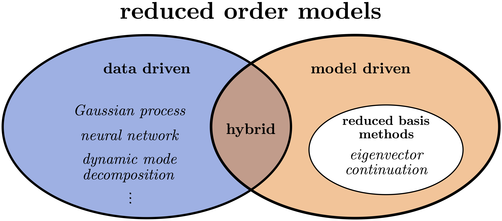
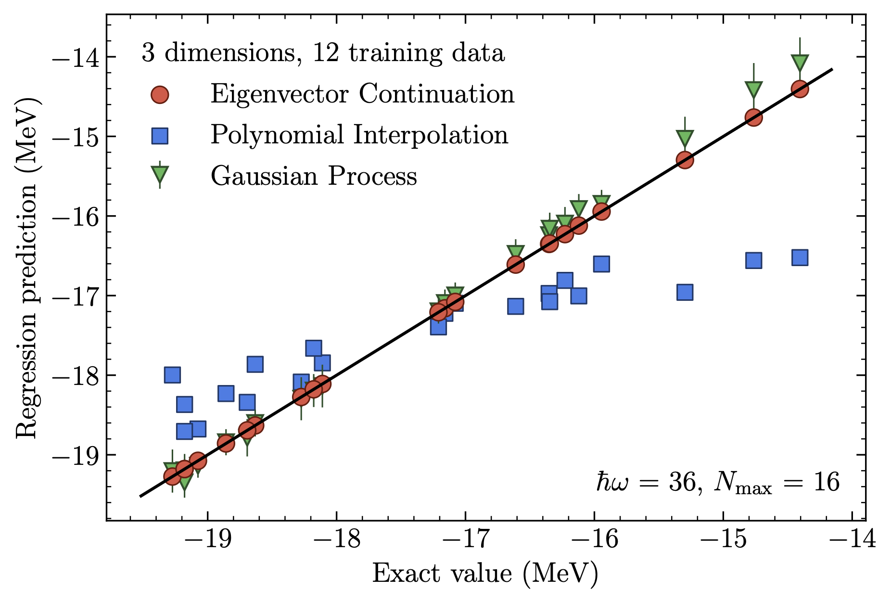
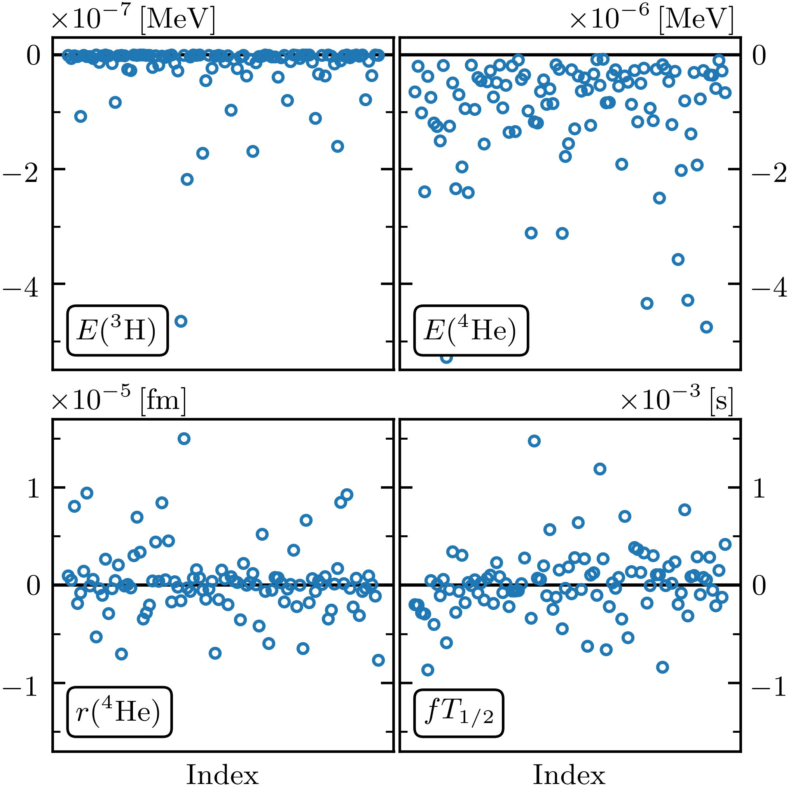
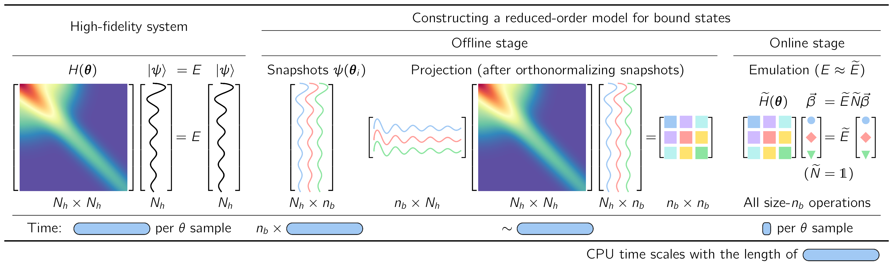
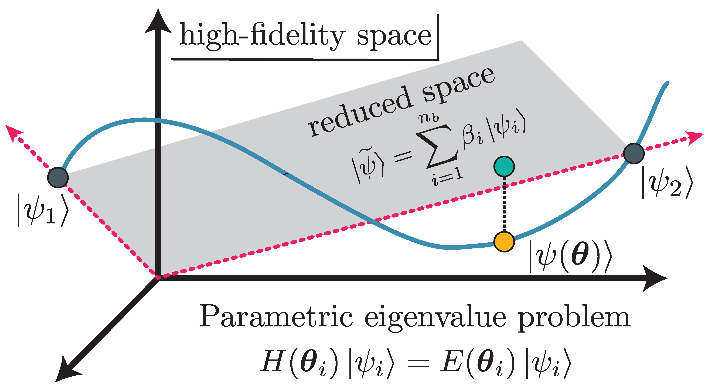
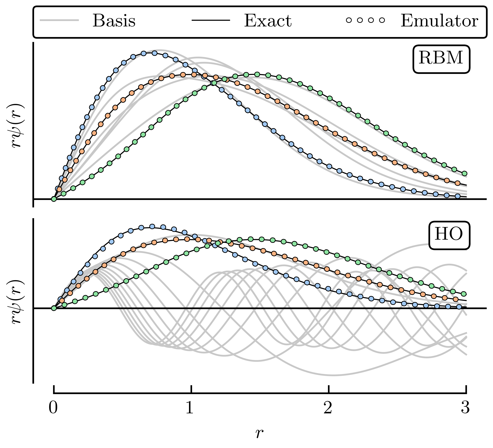
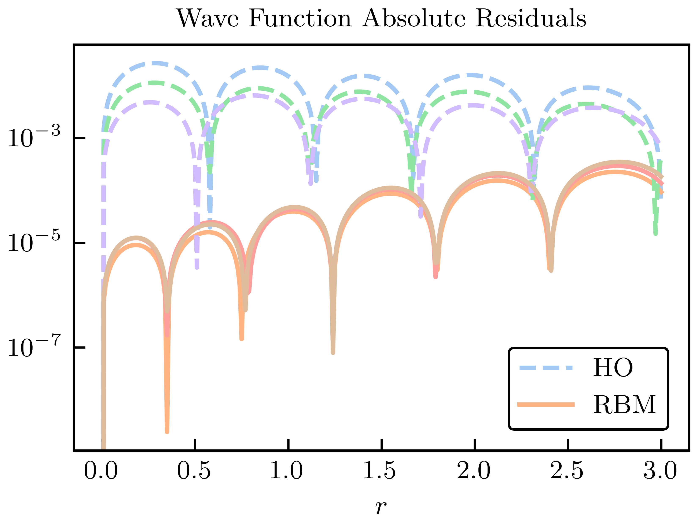
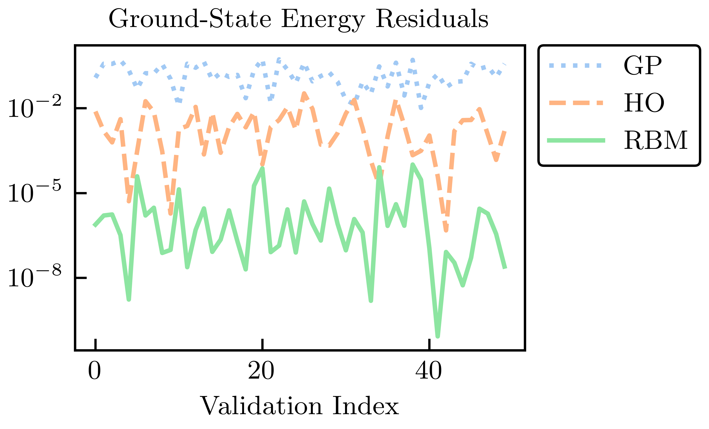
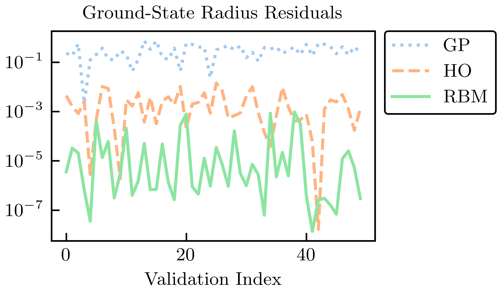

32.2. Emulators#
Being able to efficiently vary the parameters in high-fidelity models to enable design, control, optimization, inference, and uncertainty quantification is a general need across engineering and science fields. A common theme in these endeavors is that much of the information in high-fidelity models is superfluous. This can be exploited when tracing parametric dependencies by reducing the complexity through a so-called reduced order model, i.e., an emulator. The universe of model order reduction (MOR) methods is relatively mature but continues to expand, along with their applications. There remain tremendous opportunities for LENP to adapt and extend methods from the MOR literature.
{kind=link}

Fig. 32.1 Schematic classification of model order reduction emulators into data-driven methods, including Gaussian processes, artificial neural networks, and dynamic mode decomposition; model-driven methods, including reduced-basis methods (RBMs); and hybrid methods. Eigenvector continuation (EC) approaches are a subset of RBM.#
A game-changing development for Bayesian UQ in low-energy nuclear physics was the introduction of emulators derived from eigenvector continuation (EC). We can put EC emulators in perspective by considering a high-level classification of reduced order models into data-driven and model-driven categories (see Fig. 32.1). Data-driven methods typically interpolate the outputs of high-fidelity models without requiring an understanding of the underlying model structure; examples include Gaussian processes, artificial neural networks, and dynamic mode decomposition.
Note
Sometimes data-driven and model-driven methods are described as “non-intrusive” and “intrusive”, respectively.
Model-driven methods solve reduced-order equations derived from the full equations, so they are physics-based and respect the underlying structure, which often means they can extrapolate reliably; examples include the broad class of reduced-basis methods or RBMs Increasingly, there are hybrid approaches drawing from knowledge about the underlying physics problem and thereby combining both data- and model-driven aspects.
Note
An example of a physics-informed data-driven method is to constrain the kernel for a Gaussian process emulator by where we know a priori that it will be more reliable.
{kind=link}

Fig. 32.2 Superior eigenvector continuation emulator accuracy for the ground-state energy of \(^{4}\)He compared to a Gaussian process emulator and conventional interpolation.#
{kind=link}

Fig. 32.3 Residuals for four observables from an EC emulator (ground-state energies for \(^3\)H and \(^4\)He, the radius of \(^4\)He, and the \(^3\)H \(\beta\)-decay rate).#
Although originally developed independently, the model-driven EC method has long-established antecedents among RBMs. EC uses a basis derived from selected eigenvectors from different parameter sets, called snapshots in the RBM world, to project into a much smaller subspace than the original problem. In its simplest form, EC generates a highly effective variational basis (see Fig. 32.2 and Fig. 32.3 for example emulation results for ground states). Typically, EC applications exploit the RBM offline-online workflow, in which expensive high-fidelity calculations are performed once in the offline phase, enabling inexpensive but still accurate emulator calculations in the online phase.
When the offline-online workflow (see Fig. 32.4 for an example) is applied to calculate observables for many parameters characterizing Hamiltonians or other operators, the EC emulators can achieve tremendous speed-ups over high-fidelity computational methods. These gains increase with more difficult calculations; the speed-up for the light nucleus in Fig. 32.2 was over \(10^{5}\) while for coupled cluster calculations of heavy nuclei and nuclear matter speed-ups of order \(10^{9}\) are reported. This facilitates large-scale parameter exploration and calibration as well as sensitivity analyses and experimental design that would otherwise be infeasible. The model-driven nature of the EC approach ensures not only accurate interpolation in the parameter space, but in many cases provides accurate extrapolations in the spaces of control parameters such as coupling strengths, energies, and boundary conditions. A consequence is that problems that are difficult or even intractable for some range of control parameters can be attacked by calculating in a range that can be more easily solved, and then extrapolating using the emulator.
To start we consider emulators for bound states. Consider a family of matrix Hamiltonians \(H(\pars)\) that depends analytically on some vector of control parameters \(\pars\), which we write in vector notation. We assume that the matrix Hamiltonians are Hermitian for all real values of the parameters. One important example is the affine case where the dependence on each parameter decomposes as a sum of terms
for some functions \(f_\alpha\) and Hermitian matrices \(H_\alpha\). Chiral EFT Hamiltonians, with \(\pars\) being the LECs, are an important example.
Note
It is important to recognize that we do not seek a full spectrum or even more than one or two eigenvalues.
We will be interested in the properties of some particular eigenvector of \(H(\pars)\) and its corresponding eigenvalue \(E(\pars)\),
The basic idea of eigenvector continuation is that \(\ket{\psi(\pars)}\) is an analytic function for real values \(\pars\), and the smoothness implies that it approximately lies on a linear subspace with a finite number of dimensions (see Fig.~\ref{fig:schematic_rbm} for a schematic representation). We note that if there are exact eigenvalue degeneracies, the relative ordering of eigenvalues may change as we vary \(\pars\). However, the eigenvectors can still be defined as analytic functions in the neighborhood of these exact level crossings. The smoother and more gradual the undulations in the eigenvectors, the fewer dimensions needed. A good approximation to \(\ket{\psi(\pars)}\) can be found efficiently using a variational subspace composed of snapshots of \(\ket{\psi(\pars_i)}\) for parameter values \(\pars_i\). We note that for complex values of the parameters, the guarantee of smoothness no longer holds.
{kind=link}

Fig. 32.4 Illustration of the workflow for implementing fast & accurate emulators, including a high-fidelity solver (left) and an intrusive, projection-based emulator with efficient offline-online decomposition (right), for sampling the (approximate) solutions of the Schrodinger equation in the parameter space \(\pars\).#
The basic ingredients of an RBM workflow, which is built on a separation into offline and online stages, are illustrated for a familiar Hamiltonian eigenvalue problem in Fig. 32.4.
Formulation in integral form. First we cast the equations for the Schrodinger wave function or other quantities of interest (such as a scattering matrix) in integral form. For the Hamiltonian eigenvalue problem in Fig. 32.4 (left) with parameters \(\pars\), solving the finite matrix problem of a (large) basis size \(N_h\times N_h\) is formally equivalent to finding \(N_h\) (approximate) stationary solutions to the variational functional
in the space spanned by the \(N_h\) basis elements. This is our high-fidelity model.
Offline stage. Next we reduce the dimensionality of the problem by substituting for the general solution a trial basis of size \(\nb\). RBMs start with a snapshot basis, consisting of high-fidelity solutions \(\ket{\psi_i}\) at selected values \(\{\pars_i;\, i=1,\ldots,n_b\}\) in the parameter space, as in Fig. 32.4 (right). When seeking the ground state energy and wave function for arbitrary \(\pars\), these \(\ket{\psi_i}\) are ground-state eigenvectors from diagonalizing \(H(\pars_i)\). For many EC applications in nuclear physics it has been sufficient to choose this basis randomly, e.g., with a space-filling sampling algorithm such as Latin hypercube sampling. This basis spans a reduced space and can be used directly (after orthonormalizing the snapshots),
with basis expansion coefficients \(\beta_i\). The Hamiltonian is then projected to a much smaller \(\nb\times\nb\) space, as shown in Fig. 32.4b and schematically in Fig. 32.5.
More generally in RBM applications, one first compresses the snapshot basis by applying some variation of principal component analysis (known as proper orthogonal decomposition or POD in this context), which builds on the singular value decomposition (SVD) of the snapshots and enables a smaller basis size than \(n_b\). Alternatively, or in conjunction with POD, one can efficiently select snapshots by applying an active learning protocol (greedy algorithm) that aims to minimize the overall error of the emulator.
{kind=link}

Fig. 32.5 Schematic RBM representation.]{Schematic RBM representation. The high-fidelity trajectory in the Hilbert space is in blue, and include two high-fidelity snapshots (\(\pars_1\) and \(\pars_2\)), which span the ROM subspace (grey). Subspace projection is shown for \(\ket{\psi(\pars)}\).#
Online stage. For variational formulations, we enforce stationarity with respect to the trial basis expansion coefficients. This leads to a \(\nb\times\nb\) generalized eigenvalue problem for the basis coefficients,
as visualized in Fig. 32.4 (right). Note that if the basis has been orthonormalized, then \(\wt N\) is an identity matrix. Extending such an emulator to matrix elements of other operators and even transitions is straightforward.
Comparison of variational and Galerkin emulators
The variational method formulates the solution to an eigenvalue problem as a stationary functional as in (32.8). Upon inserting a trial basis as in (32.9), we obtain a generalized eigenvalue problem, (32.10).
In the Galerkin approach, we start with the weak form arising from multiplying the underlying equations and boundary conditions by arbitrary test functions and integrating over the relevant domains.
The Galerkin approach starts with the schematic form
with arbitrary test functions \(\ket{\zeta}\). The reduced dimensionality for Galerkin RBM formulations enforces orthogonality with a restricted set of \(\nb\) test functions,
If the test functions are chosen to be the trial basis functions, \(\bra{\zeta_i} = \bra{\psi_i}\), then this is called Bubnov-Galerkin or Ritz-Galerkin (or just Galerkin). If a different basis of test functions is used, this is called Petrov-Galerkin. For eigenvalue problems with Hamiltonians that are bounded from below, the Ritz-Galerkin procedure yields the same equations as the variational approach. The Petrov-Galerkin option means that the Galerkin procedure is more general.
In uncertainty quantification, for which sampling of very many parameter sets are usually required, it is essential that the emulator be many times faster than the high-fidelity calculations. This is achieved for RBM emulators by the offline and online separation because the online stage only requires computations scaling with \(\nb\) (small) and not \(N_h\) (large). An affine operator structure, meaning a factorization of parameter dependence as in (32.7), is needed to achieve the desired online efficiency because size-\(N_h\) operations such as \(\mel{\psi_i}{H_\alpha}{\psi_j}\) are independent of \(\pars\) and only need to be calculated once in the offline stage. If the problem is non-affine, then the strategy is to apply a so-called hyperreduction approach, which leads to an approximate affine form.
{kind=link}

Fig. 32.6 Comparison of RBM and HO snapshot wave functions for the illustrative toy example.#
{kind=link}

Fig. 32.7 Absolute residuals compared to the high-fidelity solution for the HO and RBM emulators.#
As an explicit illustrative example we consider a simple anharmonic oscillator in quantum mechanics with potential:
Checkpoint question
How do you know that this potential is affine in the sense of (32.7)?
Answer
The dependence on \(\pars = \{\para_1,\para_2,\para_3\)} is factored from the \(r\) and \(\sigma_n\) dependence. That is, the potential is the sum of terms, each of which is independent of \(\pars\) or the product of a function of some \(\para_i\) (in this case a linear function) times a function independent of \(\pars\).:::
Checkpoint question
Would the potential be affine if we chose to vary the \(\sigma_n\) parameters?
Answer
No, because the \(\sigma_n\) appear nonlinearly with the \(r\) dependence; they cannot be factored out.:::
Here the high fidelity solution is from the numerical solution of the time-independent Schrodinger equation with a fine mesh in coordinate space. Following the MOR paradigm, we take snapshots of the high-fidelity wave function at various training parameters \(\{\pars_i\}\) and collect them into our basis \(X\). Matrix elements in the reduced space (a \(n_b \times n_b\) matrix) are
which is manifestly affine. Thus the matrix elements on the right side can be calculated in advance (offline stage) once the snapshots training parameters are chosen.
Here, we choose \(n_b = 6\) training points randomly and uniformly distributed in the range \([-5, 5]\),MeV for all \(\para_n\); 50 validation parameter sets are chosen within the same range. For illustration, we take three of the validation parameter sets we sampled and compare the exact and emulated wave functions for both the RBM and HO emulators in Fig. 32.6 and Fig. 32.7. Although both the reduced basis and HO basis are rich enough to capture the main effects of varying \(\pars\), the RBM emulator is much more effective at capturing the fine details of the wave function.
We add a comparison to a Gaussian process emulator. GPs are non-parametric, non-intrusive machine learning models for both regression and classification tasks. Their popularity stems partly from their convenient analytical form and flexibility in effectively modeling various types of functions. GPs benefit from treating the underlying set of codes as a black box, but this is a double-edged sword. In this example we use two independent GPs to emulate the ground-state energy and the corresponding radius expectation value. Each GP uses a Gaussian covariance kernel and is fit to the observable values at the same values of \(\pars_i\) used to train the RBM emulator. We use the maximum likelihood values for the hyperparameters.
{kind=link}

Fig. 32.8 Energy residuals across a test set for EC and GP emulation, compared with an ordinary variational calculation with the six lowest harmonic oscillator wave functions (no anharmonic piece)#
{kind=link}

Fig. 32.9 Radius residuals across a test set for EC and GP emulation, compared with an ordinary variational calculation with the six lowest harmonic oscillator wave functions (no anharmonic piece)#
The absolute residuals for the energy and radius at the validation points for each of the RBM, HO, and GP emulators are shown in Fig. 32.8 and Fig. 32.9. Among these emulators, the GP emulators perform the worst, despite being trained on the values of the energies and radii themselves to perform this very emulation task. Furthermore, its ability to extrapolate beyond the support of its training data is often poor unless great care is taken in the design of its kernel and mean function. The GP suffers from what, in other contexts, could be considered its strength: because it treats the high-fidelity system as a black box (although some information can be conveyed via physics-informed priors for the hyperparameters), it cannot use the structure of the high-fidelity system to its advantage. Note that the point here is not that it is impossible to find some GP that can be competitive with other RBM emulators after using expert judgment and careful (i.e., physics-informed) hyperparameter tuning. Rather, we emphasize that with the reduced-order models, remarkably high accuracy is achieved without the need for such expertise.
The HO emulator performs better than the GP emulator, but it was not “trained” per se, it was merely given a basis of the lowest six HO wave functions as a trial basis, from which a reduced-order model was derived. However, the HO emulator can still outperform the GP emulator because it takes advantage of the structure of the high-fidelity system: it is aware that the problem to be solved is an eigenvalue problem, for this is built into the emulator itself. This feature permits a single HO emulator to emulate the wave function, energy, and radius simultaneously.
The RBM emulator’s performance is the best, which typically demonstrates higher accuracies than the HO and GP emulators by multiple orders of magnitude. The RBM emulator combines the best ideas from the other emulators. Like the GP, the RBM emulator uses evaluations of the eigenvalue problem as training data. However, its “training data” are curves (i.e., the wave functions) rather than scalars (e.g., eigen-energies), like the GP is trained upon. Like the HO emulator, the RBM emulator takes advantage of the structure of the system when projecting the high-fidelity system to create the reduced-order model. With these strengths, the RBM emulator is highly effective in emulating bound-state systems, even with only a few snapshots and far from the support of the snapshots.
The summary here is that the GP does not use the structure of the high-fidelity system to its advantage; the HO emulator knows the problem to be solved is an eigenvalue problem but nothing more; the RBM (aka EC) training data are curves rather than scalars, taking advantage of system structure.
RBM applications in LENP include:
ground-state properties (energies, radii), excited states, and resonances;
transition matrix elements;
pairing; shell model;
special versions for the coupled cluster approach and MBPT;
systems in a finite box
subspace diag. on quantum computers
extensions to non-eigen-value problems: reactions and scattering; fission.
The extensions to scattering problems initially used the Kohn Variational Principle, but were quickly extended to variational methods based on scattering matrices rather than wave functions. Galerkin methods have generalized all these results.
A Gaussian process (GP) emulator is constructed from a set of training points, with uncertainties, by conventional GP regression formulas. This provides interpolated values with error bands. No information about the model is needed, so this is a data-driven emulator.
Because the GP relaxes to the prior mean on distances of order the correlation length, the extrapolation performance of GP emulators is poor unless there are constraints built into the GP kernel.
Comparisons to RBM emulators are shown in Fig. 32.2 and Fig. 32.3.